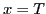
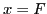
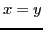
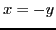

At BDD build time, meaning every time a BDD is modified by any preprocessing function, inferences are collected and attached to every pertinent node of the BDDs. This makes it a very simple process to check a BDD for inferences: just look at the list attached to the top node of any BDD and you'll see it's inferences. There are 4 types of inferences in the form of , , , . As soon as any BDD has inferences to give, it's inferences are applied to every applicable BDD.